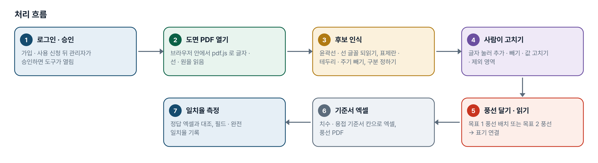
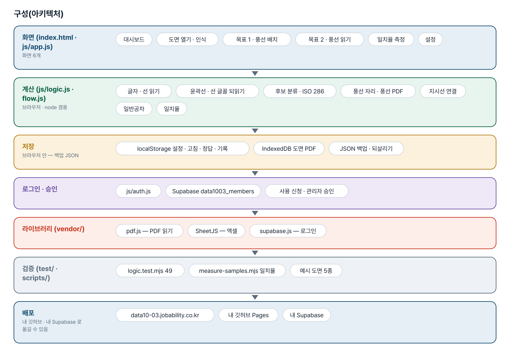
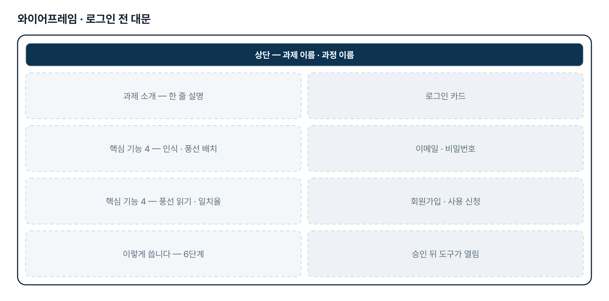
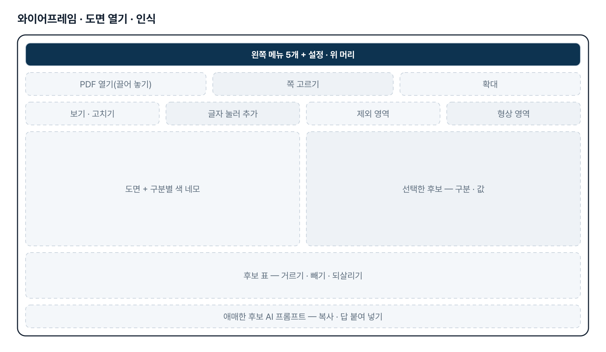
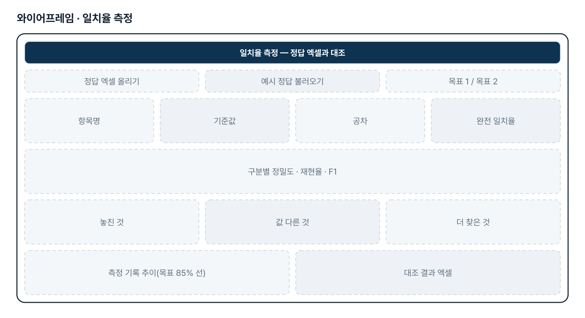
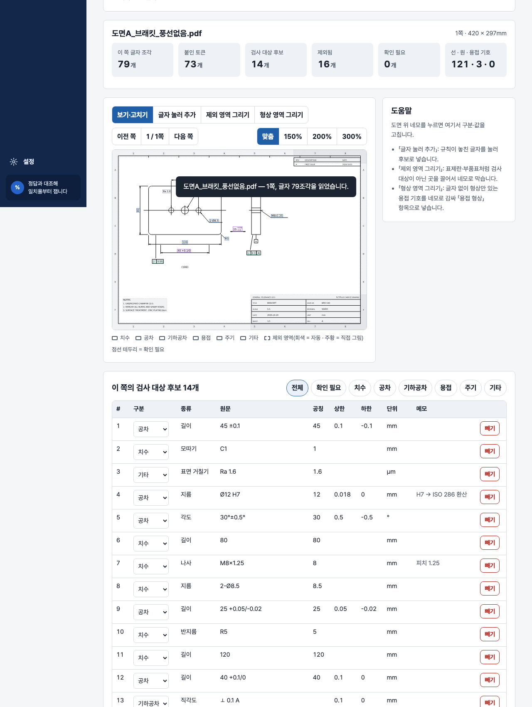

기획서 내려받기
파이프라인 · 아키텍처 · 와이어프레임 · 개발일지가 들어간 워드 문서입니다. 버전마다 따로 남깁니다.
| 버전 | 날짜 | 바뀐 점 | 파일 |
|---|---|---|---|
| v2.0 | 2026-11-10 | 최종 기획서 — 파이프라인 · 아키텍처 · 와이어프레임 정리 / 로그인 · 사용 신청 · 관리자 승인(요청자 Supabase 로 옮길 수 있게) / 로그인 전 대문 | 워드 내려받기 |
요구사항과 구현
| 기획서 요구 | 구현 |
|---|---|
| 목표 1 · 번호 풍선 자동 배치 → 풍선 포함 PDF | 후보 인식 → 번호 순서(줄 · 열 · 구역) → 겹치지 않는 자리 → 풍선 PDF · 엑셀. 원본 벡터를 그대로 두는 편집은 2단계 |
| 목표 2 · 풍선별 정보 엑셀 | 원 안 숫자 = 풍선, 지시선 끝 · 가까운 글자 연결, 치수 · 공차 · 기하공차 · 용접 |
| 형상만 있는 용접은 도형으로 | 용접 형상 그림(미리보기 · 그림 받기)과 엑셀에 잘라낼 영역 좌표 |
| 인식 일치율 85% 이상 | 필드 · 완전 일치율 측정. 새 도면 2종 목표 2 완전 일치율 45.5% → 97.2%(같은 도면으로 고치고 잰 숫자) |
| 치수 기준서 / 용접 기준서 구분(2차) | 기준서 구분(전체 · 치수 · 용접)별 번호 · 풍선 PDF · 엑셀 |
| 용접 기호 · 각장 · 부기(2차) | ISO 2553 기준선 찾기, 기준선 위 크기 글자, 단속, 용접 부기 |
| 「2x」 = 실측값 2개(3차) | 기준서 엑셀에 측정값 칸을 개수만큼 비워 둠 |
| 회색 · 파란 한 줄 선 글꼴(3차) | 선 토막을 글자로 묶어 직접 그린 선 글자표와 모양 맞추기 |
| 스캔 도면 | 2단계 — 글자가 없으면 알려 주고 멈춤(OCR 없음) |
그림으로 보기






개발일지
2026-11-10 · 최종 기획서 · 로그인
- 로그인 · 사용 신청 · 관리자 승인 키트 적용(표 data1003_members)
- 로그인 전 대문 — 과제 소개 · 핵심 기능 4 · 이렇게 씁니다
- 최종 기획서 v2.0 — 파이프라인 · 아키텍처 · 와이어프레임
- README 의 사이트 주소를 새 과정 도메인으로 정리, 내 깃허브로 옮기는 안내서
2026-10-27 · 판 맞추기
- index.html 의 모든 css · js 에 같은 판 질의, 판이 섞이면 새로고침 안내
- scripts/bump-version.mjs, 판 확인 시험 추가(49개)
2026-10-21 · 3차 반영
- 새 도면 2종 + 사람이 쓴 기준서(치수 454 · 각장 362행)로 먼저 잼 — 처음 보는 도면 완전 일치율 45.5%
- 자간 넓힌 글 · 일반공차 · 한 줄 선 글꼴 · 선 기호 · 용접 기호 묶기 · 풍선 연결 보정 → 97.2%
- 기준서 양식 엑셀, 2x 측정값 칸, 가상 도면 E, 시험 48개
2026-10-21 · 2차 반영
- 실제 도면 2장(정답 537개) — 1차 도구 완전 일치율 3.0%(글자 층 없음)
- 윤곽선 글자를 모양으로 되읽기, 선 기호, 용접 기준선, 부기, 치수/용접 기준서 구분 → 90.5%
- 가상 도면 D, 시험 35개
2026-10-20 · 1단계
- 정답 대조 · 일치율 측정을 중심에 둔 도구
- 벡터 PDF 글자 층 규칙 인식, 목표 1 풍선 PDF, 목표 2 풍선 읽기
- 가상 도면 3종, 예시 일치율 97.4%, 시험 25개